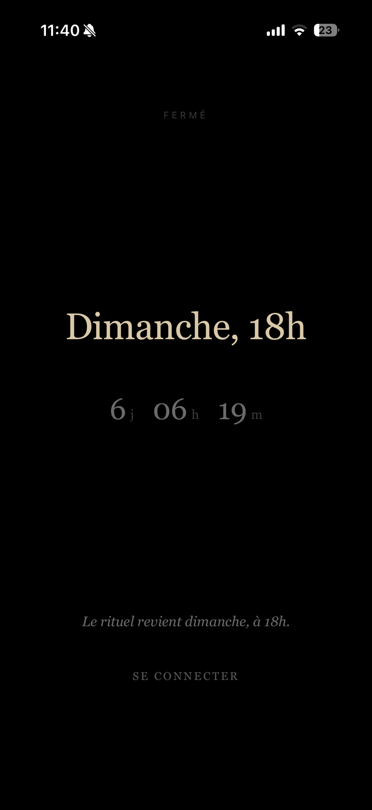
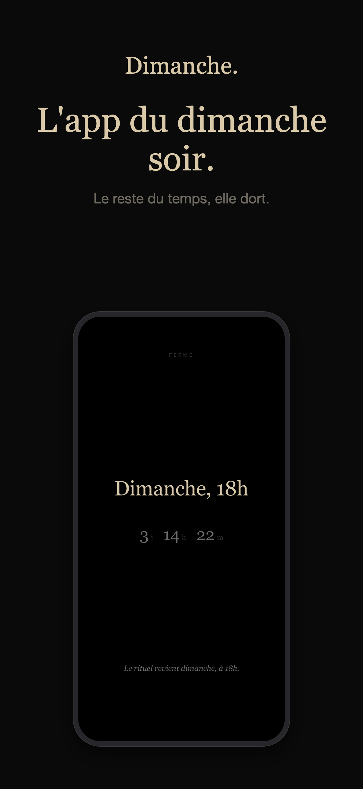
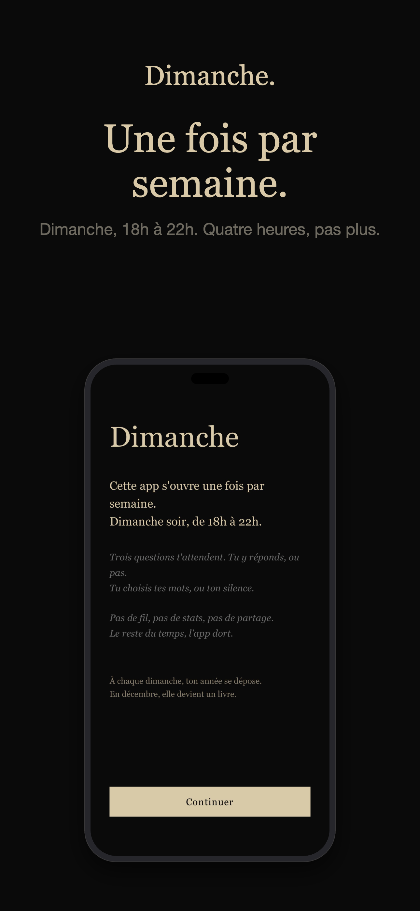
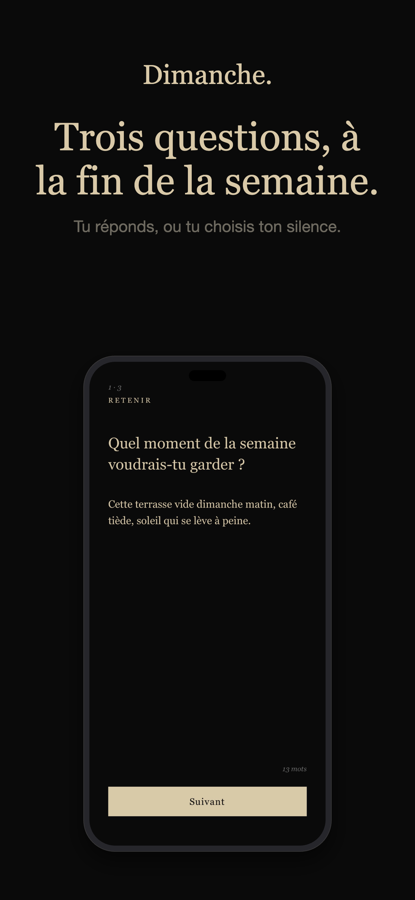
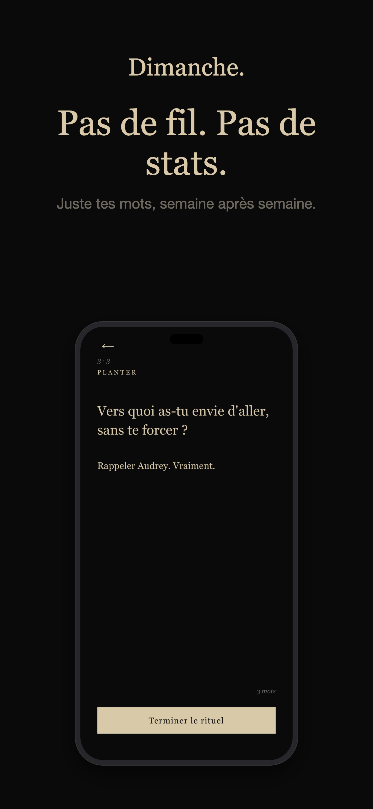
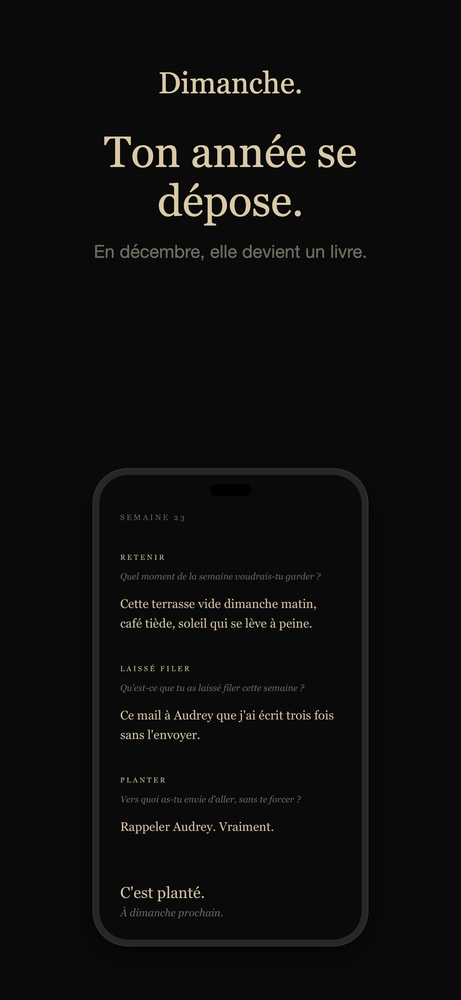

Lifestyle · Réflexion — 2026
Dimanche
L'app qui n'ouvre que le dimanche soir

Dimanche est une app mono-usage au concept radical : elle ne s'ouvre que le dimanche, de 18h à 22h. Trois questions par semaine — ce que vous voulez retenir, ce que vous avez laissé filer, ce que vous voulez planter — et vos réponses s'accumulent sur 52 semaines pour former le livre de votre année.
Ce qu'elle fait- Ouverte uniquement le dimanche 18h–22h
- 3 questions de réflexion par semaine
- 52 semaines de réponses accumulées
- Votre année transformée en livre
- Design sombre, silencieux, sans distraction
React NativeExpoTypeScriptExpo RouterZustandPocketBase (self-hosted)Notifications
Captures




